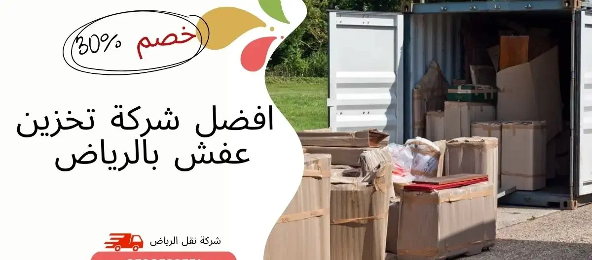

افضل شركة تخزين عفش بالرياض

إذا كنت بحاجة إلى تخزين أثاثك في الرياض بأفضل الطرق الآمنة والمنظمة، فـ عليك اختيار الشركة التي توفر لك كل ما تحتاج إليه مثل افضل شركة تخزين عفش بالرياض لأن هذا القرار يعد قرارًا هامًا، كما توفر شركة نقل الرياض حلولًا متكاملة لتخزين الأثاث بأعلى معايير الأمان والجودة، سواء كنت تريد التنقل إلى منزل جديد أو تحتاج إلى تخزين مؤقت لأثاثك، نقدم لك أفضل الخيارات لتلبية احتياجاتك بأسعار تنافسية.
افضل شركة تخزين عفش بالرياض
تعتبر شركة نقل الرياض واحدة من أفضل الشركات، التي تقدم كافة خدمات نقل وتخزين العفش في الرياض، حيث أننا نحرص جيدًا على توفير حلول تخزين مرنة تناسب جميع العملاء، كما أننا نقدم خدماتنا في مستودعات مجهزة بالكامل تتوفر فيها جميع مقومات الأمان مثل أنظمة المراقبة على مدار الساعة، بالإضافة إلى توفير بيئة نظيفة وجافة للحفاظ على الأثاث من التلف أو الرطوبة،ونوفر أيضًا خيارات متنوعة ومميزة لتخزين الأثاث على المدى القصير أو الطويل، مع مرونة في الوصول إلى الأثاث عند الحاجة، كما أننا لدينا فريق متخصص يقوم بتغليف الأثاث بشكل احترافي لحمايته أثناء التخزين، وتقدم شركتنا أيضًا خدمة التوصيل من وإلى المستودع بأسعار معقولة، مما يسهل على العملاء الوصول إلى خدماتنا بسهولة ويسر.
مستودعات شركات تخزين عفش بالرياض
يبحث الكثير عن أفضل مستودعات تخزين الأثاث بالرياض، حيث أنها تقدم حلولًا مميزة وموثوقة لجميع احتياجاتك في تخزين الأثاث بشكل مؤقت أو طويل الأمد، لذلك إذا كنت تبحث عن مستودع متخصص لتخزين أثاثك أثناء الانتقال أو في حال عدم حاجتك له لفترة، فإن أفضل شركة تخزين عفش بالرياض توفر مستودعات حديثة مجهزة بالكامل لتخزين الأثاث بأعلى معايير الأمان.
تتمتع مستودعات التخزين الخاصة بشركتنا، على أنظمة مراقبة على مدار الساعة لضمان حماية الأثاث من السرقة أو أي أضرار، حيث أن المستودعات خالية من الرطوبة والتقلبات الجوية التي قد تؤثر على الأثاث، مما يضمن لك الحفاظ عليه في حالة جيدة، فـ نحن نقدم خيارات متنوعة من حيث المساحات لتخزين الأثاث بأحجام مختلفة، مع إمكانية الوصول إلى الأثاث في أي وقت، حيث يتمتع العملاء بالمرونة في استلام أو استرجاع الأثاث عند الحاجة.
تحرص خدمات شركة نقل الرياض على تقديم خدمة تخزين آمنة بأسعار تنافسية، ونضمن لك راحة البال بمعرفة أن أثاثك في أيدٍ أمينة ومحمية.
أهمية مستودع شركة تخزين عفش بالرياض
يعد مستودع تخزين الأثاث خيارًا مثاليًا لأولئك الذين يحتاجون إلى مكان آمن وموثوق لحفظ أثاثهم لفترات زمنية قصيرة أو طويلة. يوفر المستودع العديد من الفوائد التي تسهم في الحفاظ على الأثاث وتنظيم الحياة اليومية بطريقة أكثر مرونة وراحة.
| حماية الأثاث من التلف | مستودعات التخزين مجهزة بأنظمة حديثة تحمي الأثاث من الرطوبة، الحرارة، والغبار، مما يساهم في الحفاظ على حالته الجيدة. |
| توفير المساحة في المنزل | يساعد المستودع في توفير المساحة داخل المنزل أو المكتب في حال كانت هناك قطع أثاث غير مستخدمة أو في فترات الانتقال بين الأماكن. |
| المرونة في الوصول | تتيح لك مستودعات تخزين الأثاث الوصول إلى مقتنياتك في أي وقت، مما يوفر لك راحة في حالة الحاجة إلى استرجاع أي قطعة في اللحظة المناسبة. |
| التنظيم والراحة | يوفر المستودع طريقة منظمة لتخزين الأثاث بعيدًا عن الفوضى، مما يساعد في الحفاظ على بيئة مرتبة وآمنة. |
| حل مثالي أثناء الانتقال | عند الانتقال من منزل إلى آخر، يوفر مستودع التخزين مكانًا مؤقتًا لحفظ الأثاث حتى تكون جاهزًا للانتقال إلى المكان الجديد. |
باختيار مستودعات تخزين الأثاث، تحصل على العديد من الفوائد التي تضمن لك راحة البال وتنظيم حياتك بأفضل الطرق.
تخزين اثاث جدة
يعتبر واحد من أفضل حلول تخزين الأثاث في جدة والتي تكون مثالية للأفراد الذين يحتاجون إلى مكان آمن وموثوق لحفظ أثاثهم سواء كان ذلك بشكل مؤقت أو طويل الأمد فإن في شركة نقل الرياض نحن نقدم خدمة تخزين الأثاث في جدة باستخدام مستودعات حديثة ومجهزة بأعلى معايير الأمان، مما يضمن لك حفظ الأثاث في بيئة نظيفة وآمنة بعيدًا عن الرطوبة والتقلبات الجوية التي قد تؤثر عليه.
كما تتميز مستودعاتنا في جدة بأنها مجهزة بأنظمة مراقبة على مدار الساعة، مما يوفر حماية شاملة لأثاثك. كما أن المستودعات خالية من العوامل التي قد تضر بالأثاث مثل الرطوبة أو الحرارة الزائدة، كما يمكن للعملاء تخزين الأثاث على المدى القصير أو الطويل حسب احتياجاتهم، مع توفير إمكانية الوصول إلى الأثاث في أي وقت.
إذا كنت تبحث عن خدمة تخزين أثاث موثوقة وآمنة في جدة، فإن شركة نقل الرياض تقدم لك الحلول المثالية التي تجمع بين الجودة والأمان بأسعار تنافسية تناسب جميع الميزانيات.
الأسئلة الشائعة حول افضل شركة تخزين عفش بالرياض
ما هي أسعار تخزين الأثاث بالرياض؟
تختلف أسعار تخزين الأثاث بالرياض بناءً على عدة عوامل مهمة، مثل حجم الأثاث الذي تحتاج إلى تخزينه، مدة التخزين، ونوع المستودع الذي تختاره، فـ عادةً ما تتراوح الأسعار بين 100 ريال سعودي إلى 500 ريال، ولكن يمكن أن تختلف حسب المساحة المطلوبة ومستوى الخدمات المقدمة، إليك بعض العوامل التي تؤثر في تحديد الأسعار:
- حجم الأثاث: كلما كان حجم الأثاث أكبر، كلما كانت التكلفة أعلى لأنك ستحتاج إلى مساحة أكبر في المستودع.
- مدة التخزين: بعض الشركات تقدم خصومات للمدة الطويلة. إذا كنت بحاجة لتخزين الأثاث لفترة طويلة، قد تحصل على سعر أفضل.
- مستوى الأمان: أسعار تخزين الأثاث قد ترتفع إذا كانت المستودعات مجهزة بأنظمة أمان متقدمة مثل المراقبة على مدار الساعة أو التحكم في درجة الحرارة والرطوبة.
- الخدمات الإضافية: مثل خدمة النقل أو التغليف، حيث قد تؤثر أيضًا في التكلفة الإجمالية.
من المهم أن تتواصل مع الشركات المحلية للحصول على تقديرات دقيقة وفقًا لاحتياجاتك الخاصة.
ما هي مميزات شركة تخزين عفش بالرياض؟
- أمان عالي: أنظمة مراقبة على مدار الساعة لحماية الأثاث.
- مستودعات مجهزة: تخزين في بيئة خالية من الرطوبة والحرارة.
- مرونة في الوصول: إمكانية الوصول إلى الأثاث في أي وقت.
- تغطية تأمينية: حماية للأثاث من الأضرار أثناء التخزين.
- خدمة نقل الأثاث: نقل الأثاث من وإلى المستودع بأسعار معقولة.
- تخزين مرن: خيارات متعددة للمساحة وفترات التخزين.
- أسعار تنافسية: خدمات عالية الجودة بأسعار مناسبة.
تلك المميزات تجعل اختيار شركة تخزين عفش بالرياض مثل نقل الرياض خيارًا آمنًا وموثوقًا.
في النهاية تعتبر شركة نقل الرياض افضل شركة تخزين عفش بالرياض، من الشركات الرائدة التي يمكنك التأكد من أن أثاثك في أيد أمينة، كما أننا نضمن لك تخزين آمن ومرن مع خدمة مميزة تراعي راحة العميل واحتياجاته، سواء كنت تبحث عن تخزين مؤقت أو طويل الأمد، توفر شركتنا حلولًا تتناسب مع ميزانيتك وتضمن لك راحة البال.